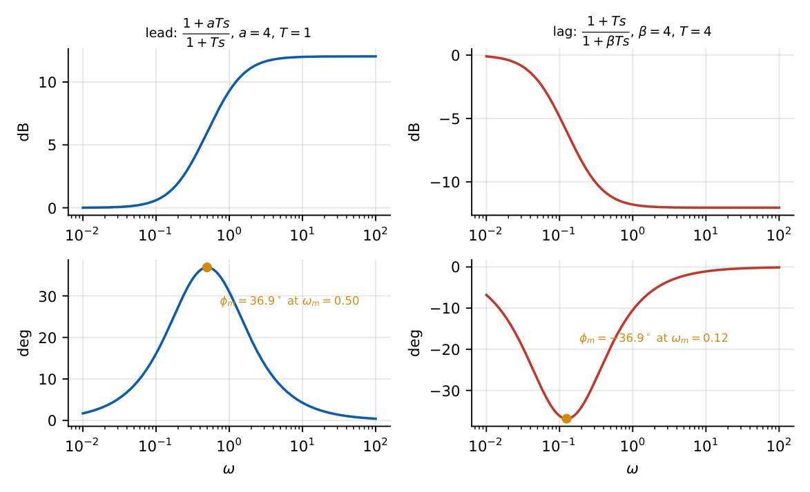
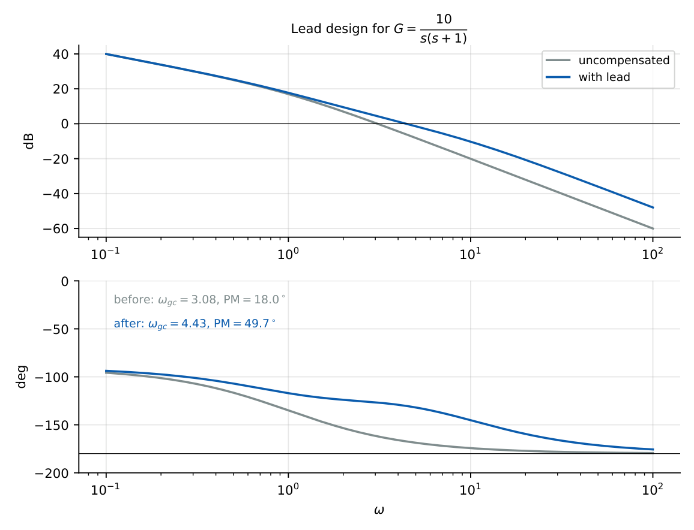

Compensators
In this chapter
Lead and lag networks: pole–zero positions, maximum phase, effect on PM, bandwidth, steady-state error. Design steps on the Bode plot. Frequent 1-mark and occasional 2-mark questions.
18.1 Core concept
When gain adjustment alone cannot meet the transient and steady-state specifications, a compensator (a network with its own poles and zeros) is added to reshape the loop. A controller (Ch. 17) is defined by its action on the error signal (P, I, D); a compensator is defined by where its pole and zero sit in frequency. Lead \(\approx\) PD-like, lag \(\approx\) PI-like.
18.2 Lead compensator
\(G_c(s)=\dfrac{1+aTs}{1+Ts}=a\,\dfrac{s+1/(aT)}{s+1/T}\), \(a>1\): zero at \(z=\dfrac1{aT}\), pole at \(p=\dfrac1T\), so \(a=p/z\); in the unnormalised form \(G_c=\dfrac{s+z}{s+p}\) with \(p>z\).
Maximum phase lead: \(\phi_m=\sin^{-1}\dfrac{a-1}{a+1}\) at \(\omega_m=\sqrt{zp}=\dfrac1{T\sqrt a}\). Gain at \(\omega_m\) (DC gain \(=1\)): \(10\log a\) dB. High-frequency gain \(=a\).
- Adds phase near \(\omega_{gc}\): improves PM and damping; raises \(\omega_{gc}\), bandwidth (faster rise/settling).
- Amplifies high-frequency noise; does not improve steady-state error (may lower it if the DC gain is reduced).
- Root locus: pulls the locus to the left (a zero closer to the origin than the pole).
18.3 Lag compensator
\(G_c(s)=\dfrac{1+Ts}{1+\beta Ts}\), \(\beta>1\); pole–zero form \(\dfrac{s+z}{s+p}\) with \(p<z\) (\(\beta=z/p\)). DC gain \(1\), high-frequency gain \(1/\beta\) (\(-20\log\beta\) dB). Maximum phase lag \(-\sin^{-1}\dfrac{\beta-1}{\beta+1}\) at \(\omega_m=\dfrac{1}{T\sqrt\beta}\).
- Reduces gain near \(\omega_{gc}\) so \(\omega_{gc}\) moves left where the plant phase is better: improves PM without much extra phase lag when its corner frequencies are placed well below \(\omega_{gc}\); the DC gain (and hence \(K_v\)) is preserved so steady-state accuracy improves relative to a gain-reduced design.
- Reduces bandwidth (slower response); attenuates noise.
- Root locus: pole and zero near the origin, contributing \(<5^\circ\) at the dominant poles; the ratio \(z/p\) multiplies \(K_v\).

| Lead | Lag | |
|---|---|---|
| Transfer function | \(\dfrac{s+z}{s+p}\), \(p>z\) | \(\dfrac{s+z}{s+p}\), \(p<z\) |
| Phase | positive | negative |
| PM | increases (via added phase) | increases (via gain reduction at new \(\omega_{gc}\)) |
| Bandwidth | increases | decreases |
| Rise time | decreases | increases |
| Steady-state error | unchanged (or larger) | decreases |
| Noise | more sensitive | less sensitive |
| Similar to | PD | PI |
18.4 Lead-lag compensator
\(G_c=\dfrac{(1+a T_1s)(1+T_2s)}{(1+T_1s)(1+\beta T_2s)}\): lead for transient, lag for accuracy; cost is complexity.
18.5 Design on the Bode plot
Lead design:
- Choose \(K\) to meet the steady-state (\(K_v\)) requirement.
- Find PM of \(KG\); needed lead \(\phi_m=\mathrm{PM}_{des}-\mathrm{PM}+(5^\circ\text{--}12^\circ)\).
- \(a=\dfrac{1+\sin\phi_m}{1-\sin\phi_m}\).
- Find the frequency where \(|KG|=-10\log a\) dB: set \(\omega_m\) there (new \(\omega_{gc}\)).
- \(T=\dfrac{1}{\omega_m\sqrt a}\); check the PM.
\(G=\dfrac{10}{s(s+1)}\) (\(K_v=10\) already met): \(\omega_{gc}=3.08\), \(\mathrm{PM}=18^\circ\). Target \(\mathrm{PM}=50^\circ\): \(\phi_m=50-18+5=37^\circ\Rightarrow a=\dfrac{1+\sin37^\circ}{1-\sin37^\circ}=4.02\) (\(6\) dB). The plant magnitude is \(-6\) dB at \(\omega=4.42\), so \(\omega_m=4.42\); \(T=\dfrac1{4.42\sqrt{4.02}}=0.113\). \(G_c=\dfrac{1+0.454s}{1+0.113s}\). Result: \(\omega_{gc}=4.43\), \(\mathrm{PM}=49.7^\circ\), \(K_v=10\) unchanged.

Lag design:
- Set \(K\) for \(K_v\). Find the frequency \(\omega_{new}\) where the phase of \(KG\) gives \(\mathrm{PM}_{des}+5^\circ\).
- \(\beta=|KG(j\omega_{new})|\) (the gain to remove there).
- Zero at \(\omega_{new}/10\): \(T=10/\omega_{new}\); pole at \(1/(\beta T)\).
\(G=\dfrac{20}{s(1+0.5s)}\): \(K_v=20\), but \(\omega_{gc}=6.17\), \(\mathrm{PM}=18^\circ\). Aim: \(\mathrm{PM}=45^\circ\), so use \(\mathrm{PM}_{des}+5=50^\circ\): phase \(-130^\circ\Rightarrow\tan^{-1}(0.5\omega)=40^\circ\), \(\omega_{new}=1.68\). \(|G(j1.68)|=9.13\), so \(\beta=9.13\); \(T=10/1.68=5.96\): \(G_c=\dfrac{1+5.96s}{1+54.4s}\). Result: \(\omega_{gc}=1.68\), \(\mathrm{PM}=44.8^\circ\), \(K_v=20\) preserved. Bandwidth fell from \(6.2\) to \(1.7\) rad/s.
18.6 Physical interpretation
Lead is a “phase booster”: it makes the loop react to the rate of change of the error. Lag is a “gain trimmer”: it keeps a high low-frequency gain (accuracy) while chopping the gain near crossover (stability).
Lead: \(\sin\phi_m=\dfrac{a-1}{a+1}\); \(a=4\to37^\circ\); \(a=10\to55^\circ\); \(a=100\to78.6^\circ\). Single-stage lead rarely gives more than \(\approx60^\circ\). Lag: \(\beta=|KG(\omega_{new})|\), zero one decade below \(\omega_{new}\).
(i) Lead: \(\omega_m\) is the geometric mean of the corner frequencies, not the arithmetic. (ii) Lag networks have negative phase: do not place them near \(\omega_{gc}\). (iii) The DC gain is \(1\) for both when written in the time-constant form; if written as \(\dfrac{s+z}{s+p}\) the DC gain is \(z/p\). (iv) Lead does not improve accuracy; lag does. (v) Lead increases bandwidth (and noise), lag decreases it.
Q1. A lead compensator has (A) pole nearer the origin than the zero (B) zero nearer the origin than the pole (C) two poles (D) a pole at the origin.
Q2. A lag compensator (A) increases bandwidth (B) reduces steady-state error (relative to gain-limited designs) (C) increases noise (D) adds positive phase.
Q3. Maximum phase of \(\dfrac{1+4Ts}{1+Ts}\) is (A) \(30^\circ\) (B) \(36.9^\circ\) (C) \(45^\circ\) (D) \(53.1^\circ\).
Answers: Q1 (B). Q2 (B). Q3 (B): \(\sin^{-1}(3/5)\).
Q4. \(G_c=\dfrac{s+2}{s+8}\): \(\omega_m=\) (A) \(4\) (B) \(5\) (C) \(2\) (D) \(8\); \(\phi_m\) is (A) \(30^\circ\) (B) \(36.9^\circ\) (C) \(45^\circ\) (D) \(53.1^\circ\).
Q5. A lead network is required to give \(\phi_m=30^\circ\). The ratio \(a\) is (A) \(2\) (B) \(3\) (C) \(4\) (D) \(5\).
Answers: Q4: \(\omega_m=\sqrt{16}=4\); \(a=4\), \(\phi_m=36.9^\circ\): (A) and (B). Q5 (B): \(a=\dfrac{1+0.5}{1-0.5}=3\).
Q6. A lead with \(a=10\): \(\phi_m=\) degrees (one decimal); gain rise from DC to \(\omega_m\) is dB.
Q7. A lag compensator has \(z=0.1\), \(p=0.01\). The high-frequency gain (DC gain \(1\) form) is dB.
Answers: Q6: \(\sin^{-1}(9/11)=54.9^\circ\); \(10\log10=10\) dB. Q7: \(\beta=10\), \(-20\) dB.
Q8. Which are true of a lead network? (A) Improves PM (B) Reduces bandwidth (C) Raises bandwidth (D) Adds high-frequency gain.
Answers: Q8: (A), (C), (D).
Poles/zeros: zero at \(-1\), pole at \(-10\) (\(\dfrac{s+1}{s+10}\)): \(a=10\), \(\omega_m=\sqrt{10}=3.16\), \(\phi_m=54.9^\circ\), and the magnitude at \(\omega_m\) relative to DC (\(0.1\)) is \(10\log10=10\) dB, so \(|G_c(j\omega_m)|=0.1\sqrt{10}=0.316\).
T1. Why does a lag compensator improve PM despite its negative phase?
T2. Find \(\omega_m\) and \(\phi_m\) for \(\dfrac{s+5}{s+45}\).
Answers: T1: it lowers gain near the old \(\omega_{gc}\), moving the crossover to a frequency where the plant phase is less negative; with its corners well below \(\omega_{new}\) its phase there is small. T2: \(\omega_m=\sqrt{225}=15\); \(a=9\), \(\phi_m=\sin^{-1}(0.8)=53.1^\circ\).
- Lead: \(p>z\), \(\phi_m=\sin^{-1}\frac{a-1}{a+1}\), \(\omega_m=\sqrt{zp}\); \(\uparrow\)PM, \(\uparrow\)BW; PD-like.
- Lag: \(p<z\); \(\downarrow\)BW, \(\uparrow K_v\) accuracy, PI-like; zero one decade below \(\omega_{gc}\).
- Lead design: \(a=\frac{1+\sin\phi_m}{1-\sin\phi_m}\); find \(|G|=-10\log a\) dB.
- Lead-lag combines both.